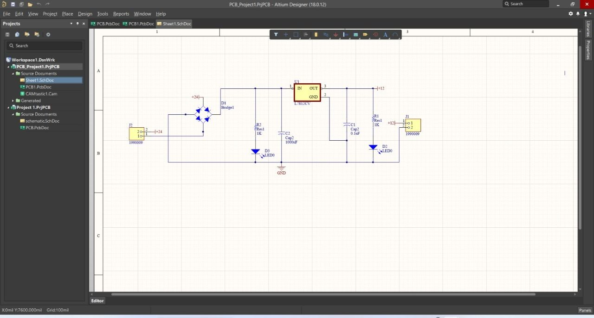
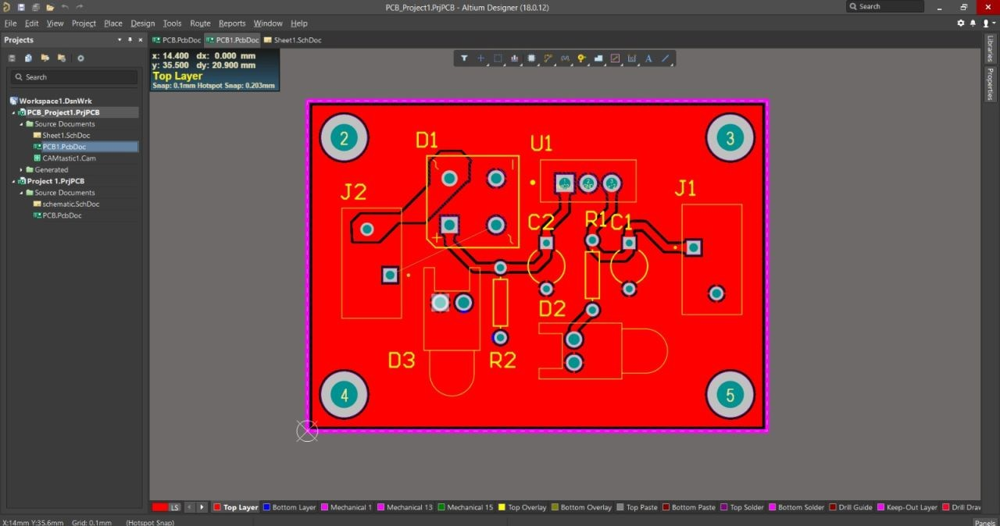
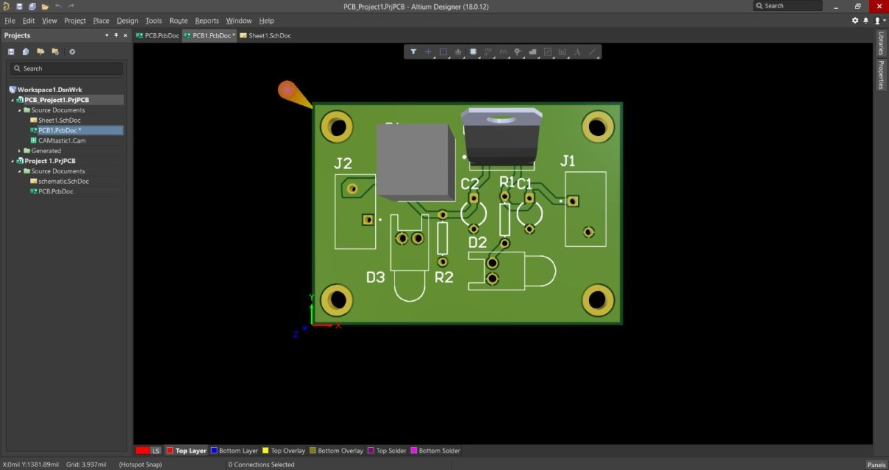
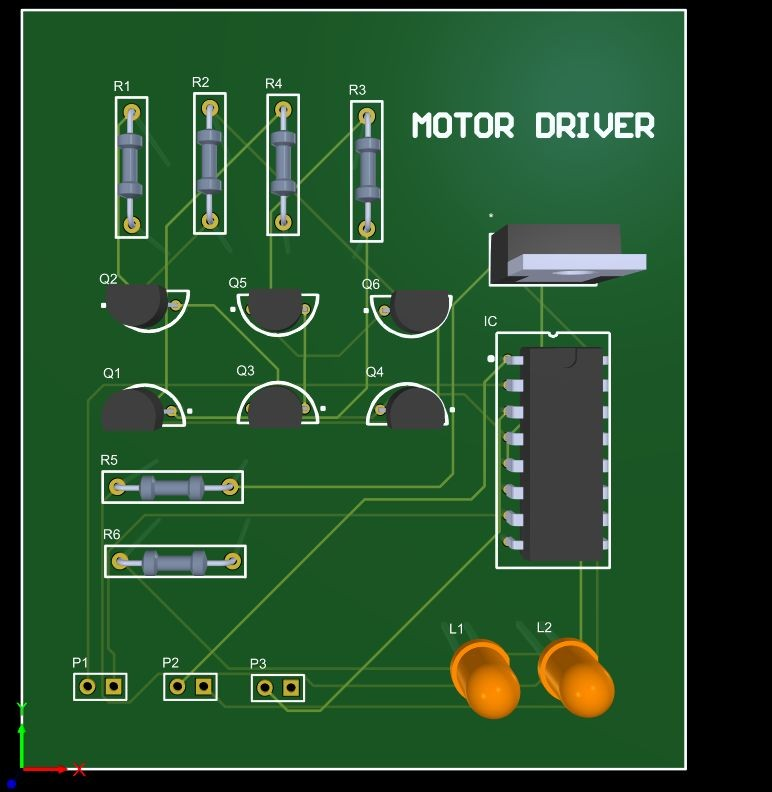
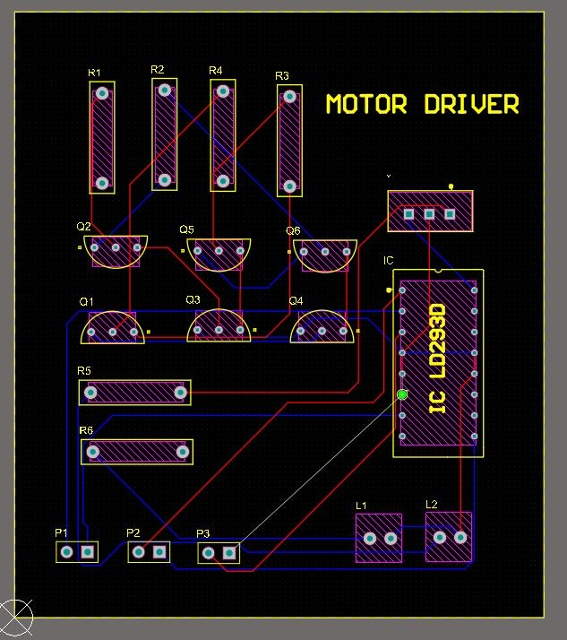

A collection of PCB Design, Embedded Systems, IoT, and AI-based projects developed during my academic journey.
Designed a simple rectifier circuit schematic, converted it into PCB layout, and generated 3D PCB visualization successfully. Currently improving skills in PCB layout design, schematic design, component placement, routing, and hardware debugging.



Designed complete schematic and PCB layout using Altium Designer for motor control applications.


Developed an AI-based object detection system using YOLO for detecting mussels in images. The project includes dataset collection, annotation, model training, evaluation, and testing. Achieved good detection accuracy and performance under different conditions.
Designed a wireless stethoscope using Arduino to capture and transmit heartbeat sounds in real time. The system focuses on signal acquisition, noise reduction, and wireless transmission for remote healthcare applications.
Developed an IoT-based assistive walker system using ESP32 camera and sensors for real-time posture and fall detection. The system sends instant alerts to caregivers during emergency conditions.